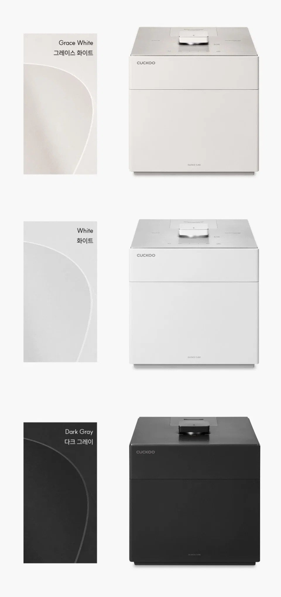

다른 주방 가전들을 따라 밥솥도 네모로 변함

다른 주방 가전들을 따라 밥솥도 네모로 변함
688,000원이네
조만간 쿠폰 뿌릴 테니 그때 사면 40만원대에 살 수 있을 거 같음
아 좀 작년에 이렇게 나오던가
디자인 좋네
이쁘네
네모버전은 단선문제 해결함??
쿠쿠밥솥이 북한에서는 최고의 선물이라는데 근데 받아도 상류층 아니면 전기 안들어와서 못쓴데
상류층한테 로비or팔아먹는데써서 좋은선물이긴하겠네
겁나 이쁜데???
뭐지 나만 공기청정기 같아서 ㅈㄴ 별로라고 생각했나
밥솥까지 네모로 나오니까 주방 가전 맞춰 놓으면 은근 깔끔해 보이긴 하겠다
엥.. 묘하다
괜찮은데?
혼자살면서 깨달은점 밥솥 존나게 비싸다
괜찮아 보이는데?
세상이 마크가되고있엉
이 새끼들 제품 왤케 단선 잘되냐 설계 개좆같이 한거냐 구조상 어쩔수 없는거냐
ㅈ같이 한게 대부분
zchi na
일부러 ㅈ같이한거 나도 예전 구형은 존나튼튼했는데 새거산건 금새 병신되고 내솥도 금방 단종으로 새제품사야하더라
오 이거 사야겠다
가습기가테
네모난 아파트에 네모난 싼타페.
네모난 밥솥과 네모난 김치통
마인크레프트냐고 ㅋㅋ
공간 활용 좋겠다. 원형이 최악의 형상임.
국내 압력솥들은 내솥 코팅이나 좀 안벗겨지게좀 만들어라
너무 튼튼하면 신제품을 안사기 때문에...
압력솥 새거가20만원인데 내솥이 13만원 이 ㅈㄹ났음 문제는 내솥을 주의하면서 썼는데도 구조를 이중으로 만들거나하는등 구조적 문제로 문제가생김 ㅋㅋㅋ
이게 스팀머신인가 그거냐?
마인크래프트 버전인데 ㄷㄷㄷㄷ
염병 밥그릇도 네모로 살 것들
좋은 하루 보내세요
네, 모나지 않는 하루 되세요
둥글둥글한건 진짜 주변공간활용도 떨어지고 이동성도 별로고 걍 최악인데 네모 보니 확사고싶노
좋은데